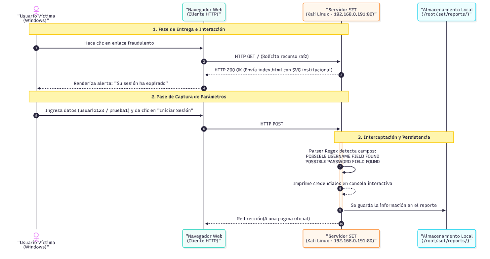

Escenario
Actividad 04: Una página demasiado convincente
Simulación de ingeniería social mediante Social-Engineer Toolkit (SET) en un entorno de laboratorio controlado.
Realizar una simulación de ingeniería social mediante Social-Engineer Toolkit (SET) en un entorno de laboratorio controlado, utilizando una página web ficticia para comprender el funcionamiento de una técnica de captura de información y reconocer los elementos técnicos y visuales que permiten identificar un intento de phishing.
2.1. Caso Institucional
El equipo de seguridad informática de una organización ficticia identificó una serie de notificaciones emitidas por empleados respecto a la recepción de correos electrónicos sospechosos. Dichos mensajes notificaban a los usuarios sobre una supuesta "expiración de sesión" e incluían un hipervínculo que los dirigía a un portal de autenticación institucional aparentemente auténtico.
La interfaz del portal fraudulento incluye la identidad visual corporativa (logotipo, tipografía, paleta de colores institucional), campos de captura para usuario y contraseña, y un banner preventivo indicando: "Su sesión ha expirado. Inicie sesión nuevamente para continuar." A pesar de que los elementos visuales transmiten legitimidad, el portal está alojado en una dirección de red ajena a la infraestructura oficial y tiene como único fin interceptar los datos de acceso para obtener un vector de entrada a la red empresarial.
2.2. Fundamentos Teóricos
Es un servicio o script malicioso configurado para interceptar, extraer y persistir identificadores de acceso (nombres de usuario, correos electrónicos, contraseñas en texto claro) que una víctima ingresa en un formulario web.
Dentro de una campaña de phishing, el Credential Harvester cumple el rol de fase de recolección de credenciales para acceso inicial. Su función no es explotar vulnerabilidades de software en el navegador ni forzar algoritmos criptográficos, sino abusar de la confianza del usuario mediante la suplantación de identidad, capturando las credenciales exactamente en el formato en que son enviadas por el protocolo HTTP antes de que lleguen a cualquier sistema legítimo.
Laboratorio
3.1. Topología y Entorno de Red
El laboratorio se estructuró mediante un enlace directo de red local entre dos entornos:

>_ Configuración del Adaptador de Red 1 en modo Adaptador Puente con Modo Promiscuo Denegado.
3.2. Herramientas y Tecnologías Utilizadas
3.3. Implementación de la Página Web Ficticia y Funcionamiento del Código
Para cumplir con las restricciones éticas del laboratorio, se programó desde cero un portal institucional para la empresa ficticia Zboz (Zboz Systems).
<!DOCTYPE html>
<html lang="es">
<head>
<meta charset="UTF-8">
<title>Sistema de Autenticación Institucional - Zboz</title>
</head>
<body>
<div class="login-wrapper">
<div class="header-brand">
<!-- Vector SVG In-line con fondo transparente -->
<svg viewBox="0 0 200 200" width="44" height="44">
<polygon points="100,10 70,78 120,55" fill="#4fa84e"/>
<polygon points="50,115 10,185 70,185 70,140" fill="#3b7d42"/>
<text x="100" y="145" font-size="52" font-weight="900" fill="#1b421a" text-anchor="middle">Z</text>
</svg>
<h3>Zboz Secure Access</h3>
</div>
<div class="alert-box">⚠️ Su sesión ha expirado. Inicie sesión nuevamente para continuar.</div>
<form method="POST" action="">
<label>Usuario:</label>
<input type="text" name="username" required>
<label>Contraseña:</label>
<input type="password" name="password" required>
<button type="submit">Iniciar Sesión</button>
</form>
</div>
</body>
</html>Evidencias
4.1. Ejecución del Módulo Credential Harvester en SET
Se inició la herramienta en Kali Linux mediante el comando sudo setoolkit. Después, se seleccionaron las siguientes opciones del menú interactivo en el orden que aparecen:
1) Social-Engineering Attacks 2) Website Attack Vectors 3) Credential Harvester Attack Method 3) Custom Import
Se especificó la dirección IP local de la máquina (192.168.0.191) como destino de retorno del POST, y se proporcionó la ruta del directorio local que contiene el archivo index.html desarrollado (/home/kali/Documents/Act_4/).

>_ Parámetros configurados en SET: puerto de escucha 80 y ruta de archivos importados.
4.2. Visualización e Interacción desde el Cliente Víctima
Desde la máquina anfitriona (Windows), se ingresó al navegador web dirigiéndose a la dirección http://192.168.0.191. Se introdujeron datos ficticios de prueba en el formulario para validar la transmisión:
> Usuario / Matrícula: usuario123
> Contraseña: prueba1

>_ Renderizado del portal institucional de Zboz en Windows con el mensaje de sesión caducada.
4.3. Interceptación de Parámetros HTTP POST en Tiempo Real
Al hacer clic en el botón "Iniciar Sesión", el navegador envió la solicitud al servidor web montado por SET. En la terminal de Kali Linux se observó la recepción inmediata de la petición POST, registrando la IP de procedencia de la víctima (192.168.0.107 / 192.168.0.108) y extrayendo en texto claro los parámetros username y password.

>_ Salida en pantalla: "WE GOT A HIT!" extrayendo usuario123 y prueba1.
4.4. Persistencia y Almacenamiento de los Datos en Archivo Local
Una vez terminada la demostración, se finalizó el listener presionando Ctrl + C. SET procesó la sesión y generó automáticamente un reporte persistente dentro del directorio de reportes (/root/.set/reports/).
Para comprobar que los datos se conservan íntegros después de la ejecución, se consultó el archivo de reporte generado en la terminal ejecutando sudo cat /root/.set/reports/*.txt.
root@kali:~# cat /root/.set/reports/2026-09-01_01.35.22.txt
--------------------------------------------------
Social-Engineer Toolkit (SET) Credential Harvester
Attack Type: Web Attack Vector
Target: http://192.168.0.191/
--------------------------------------------------
[*] Client IP: 192.168.0.107
[*] POST Request Captured:
username = usuario123
password = prueba1
[-] End of Harvester Report.Flujo Técnico
5.1. Diagrama de Flujo del Ataque
Representación secuencial de las tres fases del ataque: entrega e interacción, captura de parámetros mediante petición HTTP POST y posterior procesamiento, persistencia y redirección en el servidor atacante.

>_ Diagrama de interacción secuencial: Víctima (Windows) <---> Navegador Web <---> Servidor SET (192.168.0.191:80) <---> Almacenamiento Local.
5.2. Desglose del Ciclo de Petición-Respuesta HTTP
5.3. Distinción Técnica: Captura de Credenciales vs. Vulneración / Ruptura de Contraseñas
Es indispensable establecer una distinción técnica clara entre ambos conceptos:
Es un ataque basado en suplantación de identidad e ingeniería social. El atacante no requiere vulnerar bases de datos, romper hashes criptográficos ni adivinar combinaciones mediante fuerza bruta. Es el propio usuario autorizado que, engañado por el contexto y la apariencia visual, entrega voluntariamente sus credenciales en texto plano al servidor ilegítimo.
Es un ataque de carácter criptoanalítico o de fuerza bruta. Consiste en atacar un repositorio de autenticación previamente para revertir o descifrar la contraseña original mediante ataques de diccionario, tablas arcoíris o computación acelerada por GPU (utilizando herramientas como Hashcat o John the Ripper).
En esta práctica se demostró que el error humano y la ausencia de controles criptográficos de transporte e identidad permiten la recolección de credenciales sin necesidad de alterar la seguridad interna de los sistemas organizacionales.
Seguridad
6.1. Cinco Indicadores para Reconocer una Página Fraudulenta
| N | Indicador de Phishing | Tipo | Descripción Técnica / Visual |
|---|---|---|---|
| 1 | Dirección IP directa o Dominio Discrepante | Técnico | El portal se accede mediante una dirección IP directa (ej. http://192.168.0.190) o un dominio con una letra diferente en lugar del nombre de dominio normal (ej. microsuft.com). |
| 2 | Ausencia de Protocolo HTTPS / Certificado Inválido | Técnico | El navegador marca el sitio como "No seguro" debido a la carencia de un certificado TLS emitido por una Autoridad Certificadora (CA) de confianza. |
| 3 | Urgencia Injustificada | Visual / Contextual | Utilización de mensajes alarmistas no solicitados ("Su sesión ha expirado", "Acceso bloqueado en 24h") para precipitar la acción del usuario. |
| 4 | Comportamiento Anómalo tras el Envío | Técnico / Funcional | Al enviar el formulario, la página no inicia sesión real: recarga la misma pantalla, genera un error 404 o redirige a un sitio genérico sin preservar el estado de la sesión. |
| 5 | Incompatibilidad con Gestores de Contraseñas | Técnico | Los gestores de contraseñas de los navegadores vinculan las credenciales al dominio raíz. Si el sitio es falso, el gestor no ofrece la función de autocompletado para ese portal. |
6.2. Cinco Controles de Seguridad Propuestos
Justificación: Requiere que el usuario presente un segundo factor criptográfico vinculado al dominio legítimo antes de autorizar el acceso.
Alcance: Neutraliza de raíz el ataque de recolección de credenciales. Aunque el atacante obtenga el usuario y la contraseña en texto plano, no podrá autenticarse en los sistemas de la empresa al carecer de la llave de seguridad de hardware o del token biométrico.
Limitaciones: Costo elevado de despliegue de llaves físicas, resistencia inicial al cambio por parte de los usuarios y necesidad de compatibilidad en todos los sistemas legados institucionales.
Justificación: Inspección y bloqueo a nivel de red de conexiones dirigidas a direcciones IP directas, dominios de reciente o categorías sospechosas.
Alcance: Impide que los equipos corporativos dentro de la red o conectados mediante VPN puedan resolver o abrir URLs alojadas en servidores maliciosos o atacantes no categorizados.
Limitaciones: Resulta ineficaz si el empleado accede desde un dispositivo personal fuera del perímetro corporativo sin un agente de seguridad instalado, o si el atacante aloja el formulario en un servicio en la nube reputado (ej. formularios de Google, Microsoft Forms).
Justificación: Implementación estricta de políticas DMARC con regla de rechazo (p=reject) para validar el origen y la integridad de los correos corporativos.
Alcance: Bloquea correos electrónicos que intenten suplantar la identidad de la organización antes de que ingresen a la bandeja de entrada de los empleados.
Limitaciones: No previene ataques donde el adversario utiliza dominios parecidos pero diferentes ni cuando el vector de contacto inicial ocurre por canales externos (ej. SMS).
Justificación: Los gestores de contraseñas validan criptográficamente la URL antes de permitir el llenado automático de credenciales.
Alcance: Si el usuario accede a una página clonada que opera bajo una IP o un dominio falso, el gestor se rehúsa a autocompletar la contraseña, alertando al usuario de que el portal no coincide con el registro legítimo.
Limitaciones: El control puede ser evadido si el usuario ignora la advertencia y copia y pega manualmente sus credenciales desde el gestor hacia los campos del formulario.
Justificación: Entrenamiento periódico del personal mediante ejercicios simulados basados en técnicas reales de ingeniería social.
Alcance: Capacita a los colaboradores para reconocer elementos sospechosos en enlaces, verificar certificados de seguridad y reportar oportunamente los incidentes al área de ciberseguridad.
Limitaciones: El sesgo humano impide alcanzar una efectividad del 100%; un porcentaje residual de usuarios siempre será susceptible a señuelos altamente dirigidos (spear phishing).
Conclusión
La realización de esta práctica permitió comprender de manera directa el funcionamiento técnico de las técnicas de recolección de credenciales mediante el uso de herramientas de ingeniería social como Social-Engineer Toolkit (SET). Se comprobó que el vector de ataque analizado explota una vulnerabilidad inherente a la naturaleza humana: la tendencia a responder con rapidez ante mensajes de urgencia (como la expiración de una sesión) dentro de entornos de trabajo dinámicos.
Desde la perspectiva técnica, el ejercicio demostró que un atacante no requiere romper algoritmos de cifrado ni comprometer los servidores centrales de una empresa para obtener credenciales válidas; basta con replicar los elementos visuales de una interfaz y canalizar el tráfico a través de peticiones HTTP POST estándar para capturar información confidencial en texto plano.
Por consiguiente, se concluye que la seguridad informática organizacional no puede depender exclusivamente del criterio de los usuarios ni de una única barrera perimetral. Resulta indispensable adoptar un enfoque de Defensa en Profundidad, donde el entrenamiento continuo del factor humano se complemente de manera obligatoria con controles tecnológicos robustos, tales como la autenticación multifactor (2FA), el filtrado web automatizado y políticas rigurosas de autenticación de correo.
![[IMG] Diagrama de Secuencia diagrama_secuencia.png](Archivos/Actividad_4/diagrama_secuencia.png){kind=link}